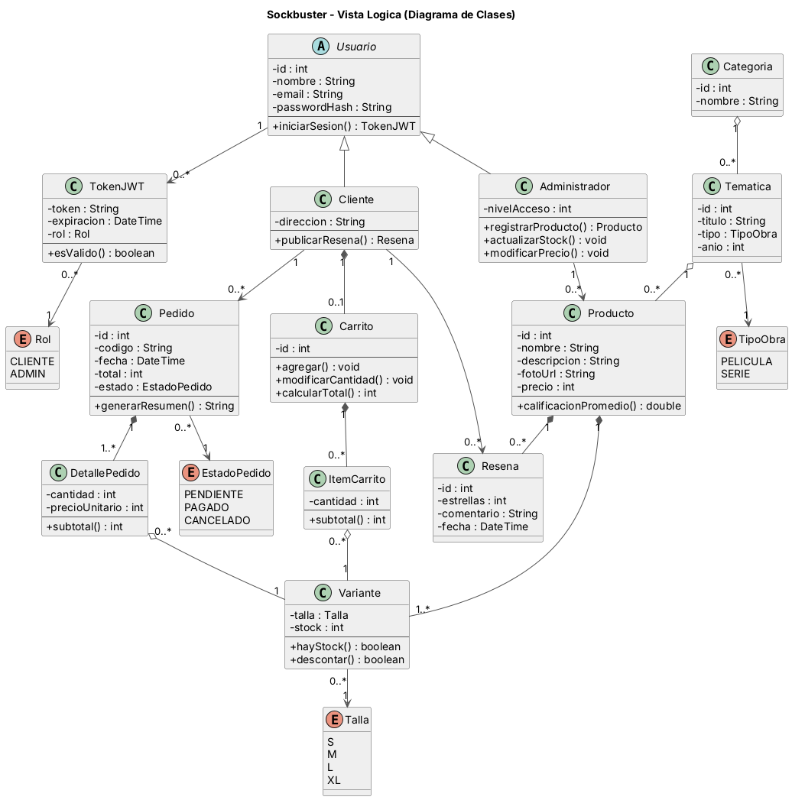
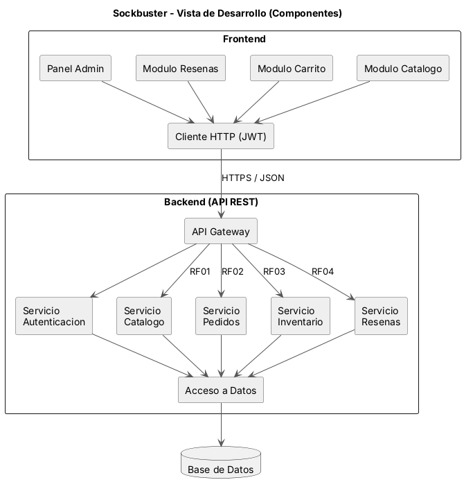
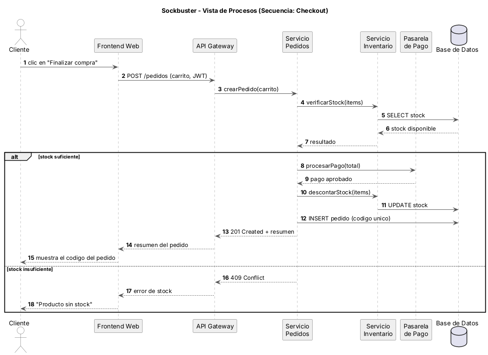
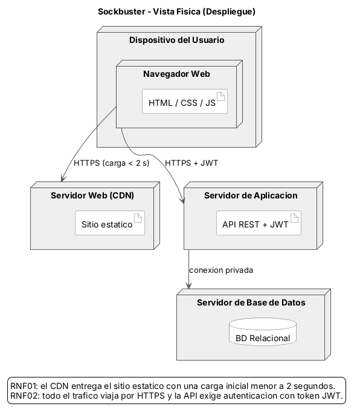
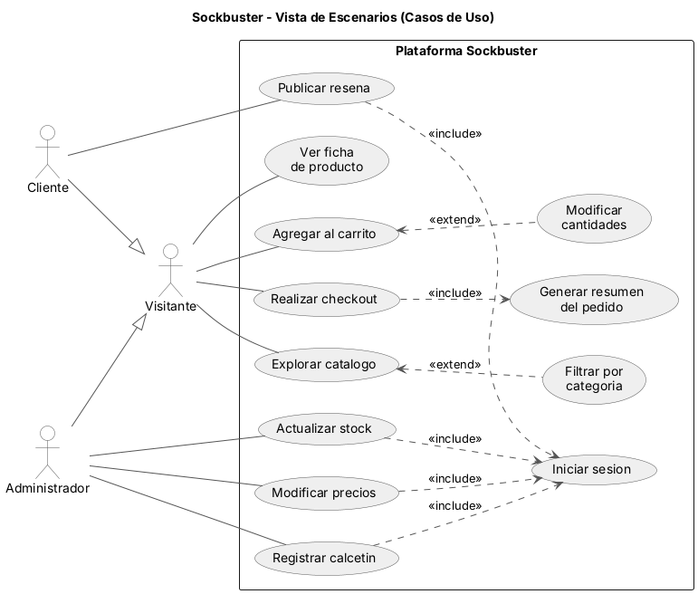

El sistema permite explorar y filtrar el catálogo por categoría (Ciencia Ficción, Terror 80s, Series de Drama, Animación), mostrando foto, precio, stock y tallas disponibles de cada modelo.
Documentación técnica
Arquitectura bajo el paradigma 4+1
El modelo de vistas 4+1 de Philippe Kruchten describe un sistema desde cinco perspectivas complementarias. Cada una responde a una pregunta distinta y se dirige a un interlocutor distinto, de modo que ninguna por sí sola alcanza a describir la solución completa.
La documentación que sigue modela la arquitectura objetivo de Sockbuster: una plataforma de comercio electrónico con una interfaz web, una API REST con servicios separados por responsabilidad y una base de datos relacional. El prototipo navegable de este sitio implementa la capa de interfaz —catálogo, carrito, checkout y reseñas—, mientras que los servicios del backend quedan modelados en las cinco vistas como la solución escalable que pide el caso de estudio.
Requerimientos funcionales
El cliente agrega productos al carrito, modifica las cantidades y simula la verificación de pago, obteniendo un resumen del pedido con su identificador único.
El administrador registra nuevos modelos, los asocia a una película o serie, actualiza el stock y modifica los precios.
Los usuarios registrados publican valoraciones de 1 a 5 estrellas y comentarios en la ficha de cada producto.
Requerimientos no funcionales
La interfaz pública está disponible en línea con una carga inicial bajo los 2 segundos, alojada en un entorno de hosting accesible vía web.
La comunicación entre la interfaz y los servicios se realiza sobre HTTPS, y las funciones administrativas exigen autenticación mediante tokens JWT.
Alcance del prototipo: RF01, RF02 y RF04 son operables en la página de catálogo. RF03 queda modelado en las cinco vistas, pero su panel de administración no forma parte de las tres páginas solicitadas en el entregable. Los dos requerimientos no funcionales se sostienen en la vista física, donde se especifican el entorno de alojamiento y los mecanismos de seguridad.
Vista Lógica
Diagrama de clasesResponde a qué entidades existen en el dominio y cómo se relacionan. Es la vista que interesa al usuario final y al analista, porque describe la funcionalidad del sistema en términos del negocio y no de la tecnología.
Usuario es una clase abstracta de la que especializan Cliente y Administrador, lo que evita duplicar los atributos de identidad y permite que cada rol agregue solo sus operaciones propias. De Usuario cuelga TokenJWT, que materializa el mecanismo de autenticación exigido por RNF02 y lleva el Rol con que se emitió.
Tres decisiones de modelado merecen defenderse. La primera es Variante: el stock no es un atributo de Producto sino una clase aparte, porque depende de la talla, y un mismo modelo puede estar agotado en S y disponible en L. La segunda es DetallePedido, que guarda su propio precioUnitario en lugar de leerlo del producto: así el pedido conserva el precio del día de la compra aunque el producto suba después. La tercera es la cadena Categoria → Tematica → Producto, que separa la categoría comercial de la obra que inspira el diseño, tal como pide RF03 al exigir asociar cada modelo a una película o serie.
Las composiciones marcan las entidades cuyo ciclo de vida depende del todo (un ItemCarrito no existe fuera de su Carrito), mientras que las agregaciones marcan las que sobreviven por su cuenta (una Variante sigue en el catálogo aunque se borre la línea de pedido que la referencia).

Figura 1 · Diagrama de clases del dominio
Modela RF01
Modela RF02
Modela RF03
Modela RF04
Vista de Desarrollo
Diagrama de componentesResponde a cómo está organizado el código fuente. Se dirige al equipo de programación y a quien tenga que mantener el sistema después.
El sistema se divide en dos bloques. El frontend agrupa un módulo de interfaz por requerimiento funcional —catálogo, carrito y checkout, panel de administración y reseñas— que no hablan directamente con la red: todos pasan por un cliente HTTP único que centraliza el manejo del token JWT, de modo que la lógica de autenticación no se repite en cada módulo.
El backend expone una API REST detrás de un API Gateway que valida el token antes de enrutar. Cada requerimiento funcional tiene su servicio: catálogo para RF01, pedidos para RF02, inventario para RF03 y reseñas para RF04, más el de autenticación que los atraviesa a todos. Ningún servicio consulta la base de datos por su cuenta: todos pasan por una capa de acceso a datos común, lo que concentra en un solo punto las consultas y las transacciones.

Figura 2 · Diagrama de componentes del prototipo
Implementa RF01
Implementa RF02
Implementa RF03
Implementa RF04
Sostiene RNF02
Vista de Procesos
Diagrama de secuenciaResponde a qué ocurre en el tiempo cuando el sistema está corriendo: el orden de las interacciones, la sincronización y los caminos alternativos. Se dirige al integrador del sistema.
El diagrama recorre el checkout de RF02 completo, desde el clic en «Finalizar compra» hasta el código del pedido. El sistema verifica el stock contra la base de datos antes de cobrar, de modo que un pedido sin existencias se corta sin llegar nunca a la pasarela de pago.
El orden de los últimos mensajes no es decorativo: el stock se descuenta después de que la pasarela aprueba el pago, nunca antes. Invertir esos dos pasos dejaría unidades reservadas por pagos que terminaron fallando, un error frecuente en sistemas de comercio electrónico. El fragmento alternativo cubre las dos salidas posibles: 201 cuando el pedido queda creado y 409 cuando falta stock.

Figura 3 · Secuencia del checkout
Detalla RF02
Sostiene RNF02
Vista Física
Diagrama de despliegueResponde a dónde se ejecuta cada parte del sistema: la topología de red, los nodos y los protocolos entre ellos. Se dirige al ingeniero de infraestructura.
Es la vista donde se justifican los dos requerimientos no funcionales. Los archivos estáticos se sirven desde un servidor web con CDN, lo que sostiene la carga inicial bajo los 2 segundos que exige RNF01 sin que cada visita golpee el servidor de aplicación.
El servidor de aplicación corre la API REST y es el único que alcanza la base de datos, por conexión privada: la base no se expone a Internet, que es una decisión de seguridad tan importante como el cifrado. Para RNF02, todo el tráfico entre el navegador y los servidores viaja sobre HTTPS, y las llamadas a la API llevan el token JWT.

Figura 4 · Topología de despliegue
Sostiene RNF01
Sostiene RNF02
Escenarios · Casos de uso
Diagrama de casos de usoResponde a qué puede hacer cada actor con el sistema. En el paradigma 4+1 esta quinta vista cumple una función especial: no agrega información nueva, sino que valida y une a las otras cuatro. Cada escenario debe poder recorrerse a través de las clases de la vista lógica, los componentes de la vista de desarrollo, la secuencia de la vista de procesos y los nodos de la vista física.
Los actores se organizan por generalización: Cliente y Administrador especializan a Visitante, de modo que heredan la navegación del catálogo sin repetirla. Publicar una reseña exige estar registrado, y por eso cuelga del cliente y no del visitante.
Las relaciones include marcan lo que siempre ocurre: todo checkout genera su resumen con código único, y toda operación que modifica datos pasa por el inicio de sesión. Las extend marcan lo opcional: se puede recorrer el catálogo sin filtrar por categoría, y se puede comprar sin modificar las cantidades del carrito. Fíjense en que las flechas apuntan en sentidos contrarios, porque en include va del caso base al incluido y en extend va del caso que extiende hacia el base.

Figura 5 · Casos de uso del sistema
Valida RF01
Valida RF02
Valida RF03
Valida RF04
Valida RNF02
Cómo se articulan las cinco vistas
El caso de uso «Realizar checkout» sirve de hilo conductor. Se declara como escenario en la quinta vista, junto con el include que lo obliga a generar un resumen con identificador único. Las entidades que manipula —Carrito, ItemCarrito, Variante, Pedido y DetallePedido— están definidas con sus multiplicidades en la vista lógica. Los componentes que lo ejecutan —el módulo de carrito en el frontend, el API Gateway y los servicios de pedidos e inventario— aparecen en la vista de desarrollo. El orden exacto de sus mensajes, con los tres puntos donde puede fallar, está en la vista de procesos. Y los nodos sobre los que corre, con el protocolo cifrado y el token que lo protege, están en la vista física.
Ese recorrido completo es lo que el paradigma 4+1 busca garantizar: que las cuatro vistas describan el mismo sistema y que ninguna contradiga a las otras. La quinta vista no agrega información, sino que obliga a comprobarlo.